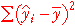

Explained and unexplained variation
For the normal linear model, the least squares line provides the best parameter
estimates and predictions. The least squares line provides fitted values,  ,
for each observation. If the linear model is useful, these fitted values will
be different from the overall response mean.
,
for each observation. If the linear model is useful, these fitted values will
be different from the overall response mean.
The vertical distances of data points to the least squares line — the residuals — are left-over unexplained variation.

| Total component | These differences reflect the total variability of the response — without taking account of the explanatory variable. | |
| Explained component | These components describe how much the predicted response changes from using the least squares line (as opposed to simply using the overall mean as a prediction). | |
| Residual component | The residuals describe the extent to which the explanatory variable fails to predict the response. Their variation is not explained by the model. |
Explained and residual sums of squares
The relative sizes of the explained and residual components reflect the proportion of response variation that is explained by a linear model. Their sizes can be summarised by their sums of squares.
| The total sum of squares reflects the total variability of the response — the response standard deviation is the square root of this divided by (n-1). | |
|  | The explained sum of squares measures the variability of the fitted values from the least squares fit. This is the variability that is explained by the model. |
| The residual sum of squares quantifies the spread of values around the least squares line. This is a measure of the unexplained variability in the response. |
The explained and residual sums of squares add to give the total sum of squares,

(This relationship requires a fair bit of algebra to prove!)
The relative sizes of the explained and residual sums of squares describe how much of the variability is explained by the model.
Simulation: Impurities in plastic
The next diagram shows simulated data that might describe the impurities recorded from batches of plastic produced at different temperatures (degrees Fahrenheit).
Click on the jittered dot plots on the right to display the different components as coloured vertical lines on the scatterplot.
Drag the slider to change the strength of the relationship between the impurities and temperature. Observe that:
The relative sizes of the sums of squares therefore hold information about the strength and significance of the relationship.